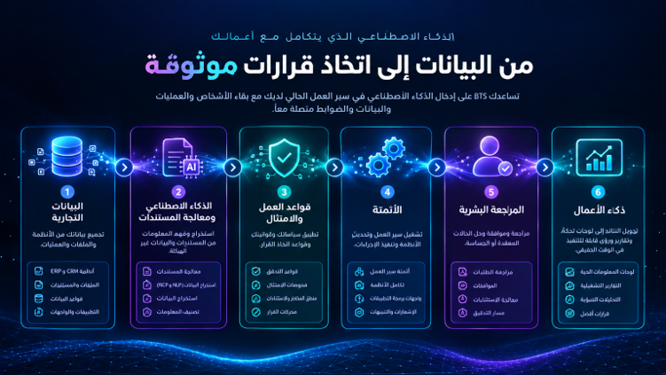

المنامة · جميع أنحاء البحرين
تساعد BTS المؤسسات في البحرين على بناء أنظمة رقمية متصلة وذكية — من خلال الجمع بين أتمتة الذكاء الاصطناعي والبرمجيات المخصصة وذكاء الأعمال وتكامل السحابة والتقنية العربية-الإنجليزية.
ستة عناصر نُقدّمها تُحدث الفرق.
تقنية للخدمات المالية والتقنية المالية والخدمات المهنية والمؤسسات الرقمية.
ذكاء اصطناعي عملي لمعالجة المستندات وأتمتة سير العمل ودعم العملاء والتقارير والذكاء التشغيلي.
معماريات سحابية حديثة وواجهات API وتكاملات مُصممة لربط المنصات والبيانات الحالية.
واجهات ثنائية اللغة ودعم RTL وسير عمل ووثائق للمؤسسات التي تخدم المستخدمين العرب والإنجليز.
خبرة تقنية بريطانية تُسلَّم عن بُعد من غلاسكو، مع مشاركة مرنة للمؤسسات في جميع أنحاء البحرين.
ذكاء اصطناعي عملي مع إشراف بشري مناسب ومعالجة بيانات وتكامل.
تهدف الاستراتيجية الوطنية للاقتصاد الرقمي في البحرين إلى تعزيز المملكة كمركز اقتصادي رقمي متكامل وتعزيز الابتكار في القطاعات الرئيسية. كما تركز المبادرات الوطنية الحالية على التقنيات المتقدمة والذكاء الاصطناعي وتبني السحابة والبيانات والحوكمة الرقمية. تبني BTS تقنية عملية حول هذه الأولويات.
أتمتة معالجة المستندات والموافقات وسير عمل العملاء والتقارير والمهام التجارية المتكررة.
اعرف المزيدتحويل بيانات الأعمال والبيانات التشغيلية إلى لوحات تحكم وتحليلات وتنبيهات ورؤى قابلة للتنفيذ.
اعرف المزيدبناء بوابات ومنصات داخلية وتطبيقات أعمال حول عمليات مؤسستك.
اعرف المزيدمنصات عربية-إنجليزية بدعم RTL وسير عمل ثنائي اللغة.
اعرف المزيدربط واجهات API وERP وCRM وقواعد البيانات وتطبيقات السحابة في بيئة تقنية أكثر توحداً.
اعرف المزيدرقمنة المخزون والمستودعات والشحن وسلسلة التوريد.
اعرف المزيدتستطيع BTS مساعدة المؤسسات على إدخال الذكاء الاصطناعي إلى سير العمل الحالي مع الحفاظ على ترابط الأشخاص والعمليات والبيانات والضوابط.

أنظمة قطاعية مُصممة للاقتصاد الرقمي البحريني.
سير عمل مدعوم بالذكاء الاصطناعي وذكاء المستندات وعمليات العملاء والتقارير ولوحات التحكم وتكامل الأنظمة.
بوابات العملاء وأتمتة المستندات وتكامل CRM وأنظمة سير العمل وذكاء الأعمال.
إدارة الطلبات وسير عمل العملاء والتحليلات والمنصات الرقمية ثنائية اللغة.
أنظمة المستودعات وسير عمل الشحنات ووضوح المخزون والذكاء التشغيلي.
سير عمل رقمي وإدارة معلومات ولوحات تحكم وتكامل وعمليات مدعومة بالذكاء الاصطناعي.
منصات متصلة بالسحابة وواجهات API وبرمجيات مخصصة وأتمتة وبنية رقمية قابلة للتوسع.
لدى البحرين تركيز حكومي طويل الأمد على تبني السحابة والتحول الرقمي، بما في ذلك نهج السحابة أولاً والتطوير المستمر للخدمات الرقمية المتكاملة. تجمع BTS هذه القدرات:
منصات متصلة بالسحابة مُصممة للتوسع والمرونة.
واجهات تربط الأنظمة والبيانات والخدمات.
خطوط بيانات ولوحات تحكم وتحليلات تشغيلية.
ذكاء المستندات والمساعدون والأتمتة.
أتمتة سير العمل والموافقات وتوجيه المستندات.
لوحات تحكم وتنبيهات ورؤى أعمال قابلة للتنفيذ.
أنظمة مؤسسية ثنائية اللغة بدعم RTL أصيل.
تُركّز BTS على التطبيقات العملية حيث يمكن للذكاء الاصطناعي تحسين سير عمل أو عملية أو نتيجة أعمال محددة — مع إشراف بشري مناسب ومعالجة بيانات وتكامل.
يتوافق هذا النهج مع تركيز البحرين الحالي على التبني المسؤول للذكاء الاصطناعي وحماية البيانات والحوكمة الرقمية.
تجمع BTS بين الخبرة التقنية في المملكة المتحدة وأنظمة رقمية مُصممة للمؤسسات العاملة في البحرين ودول الخليج الأوسع.
الأتمتة وذكاء المستندات وسير العمل الذكي.
منصات مخصصة وبوابات وأنظمة داخلية.
منصات متصلة بالسحابة وتكاملات.
ذكاء أعمال وخطوط بيانات وتحليلات تشغيلية.
واجهات API وموصلات ERP/CRM وطبقات وسيطة.
أنظمة مؤسسية ثنائية اللغة بدعم RTL أصيل.